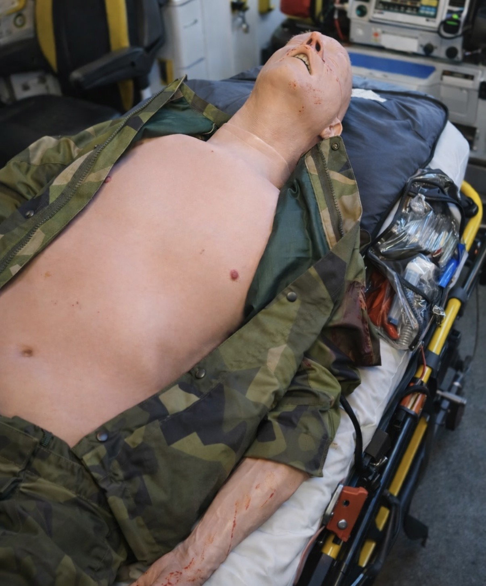

Praktyczne poradniki dla instruktorów, dowódców i osób odpowiedzialnych za szkolenia — jak dobierać sprzęt, projektować ćwiczenia i budować kompetencje zespołu.

Zakup manekina to inwestycja na lata intensywnej eksploatacji. Oto pięć pytań, które warto sobie zadać przed wyborem modelu — zanim porównacie ceny.
Czytaj artykuł →
Manekin to nie rekwizyt do przenoszenia z punktu A do B. Dobrze zaprojektowany scenariusz zmienia go w pełnoprawnego „poszkodowanego”. Sześć sprawdzonych pomysłów.
Czytaj artykuł →
Masywny krwotok potrafi zabić w kilka minut — zanim na miejsce dotrze zespół ratownictwa medycznego. Umiejętność jego zatrzymania to najbardziej „opłacalna” kompetencja pierwszej pomocy.
Czytaj artykuł →Nowe poradniki, terminy szkoleń otwartych i informacje o produktach — maksymalnie raz w miesiącu.